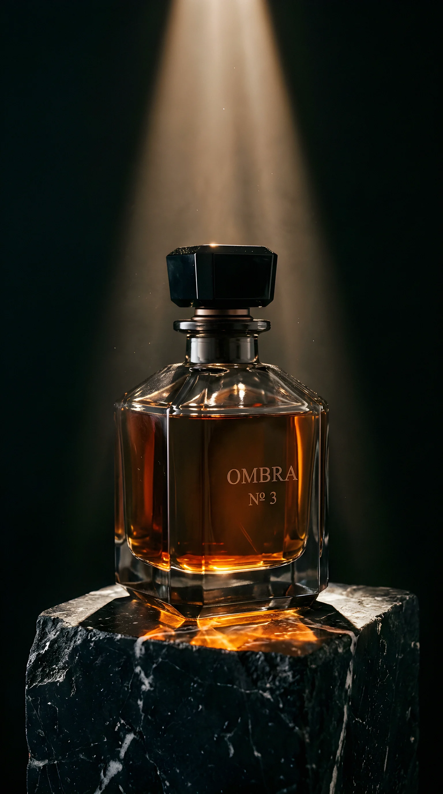

<title>Ombra Milano</title>
<link rel="preload" as="image" href="img/decanter-engraved-1536.webp" fetchpriority="high">
<link rel="preconnect" href="https://fonts.googleapis.com">
<link rel="preconnect" href="https://fonts.gstatic.com" crossorigin>
<link rel="stylesheet" href="https://fonts.googleapis.com/css2?family=Bodoni+Moda:opsz,wght@6..96,500;6..96,600&family=IBM+Plex+Mono:wght@400&family=Schibsted+Grotesk:wght@400;500&display=swap">
<style>
/* Ombra Milano, first screen. A blade of light opens the dark, the name rises from behind it,
   then the bottle emerges in depth: a real photograph with a depth map, so it turns in space under your hand */
:root {
  --black: #060505;
  --amber: #C8893E;
  --bone: #ECE4D6;
  --smoke: #968D81;   /* AA on black */
  --display: "Bodoni Moda", "Didot", Georgia, serif;
  --mono: "IBM Plex Mono", ui-monospace, monospace;
  --body: "Schibsted Grotesk", "Helvetica Neue", Arial, sans-serif;
  --gl: max(16px, env(safe-area-inset-left, 0px));
  --gr: max(16px, env(safe-area-inset-right, 0px));
  --pad: clamp(0px, 3vw, 40px);
  --hard: cubic-bezier(.7, 0, .1, 1);   /* masculine: slow start, decisive stop */
  --slow: cubic-bezier(.2, 0, .1, 1);
  color-scheme: dark;
}
* { box-sizing: border-box; }
html, body { margin: 0; background: var(--black); color: var(--bone); font-family: var(--body); font-size: 16px; line-height: 1.55; }
p, h1 { margin: 0; }
a { color: inherit; }
:focus-visible { outline: 1px solid var(--amber); outline-offset: 4px; }
.mono { font-family: var(--mono); font-size: 12px; letter-spacing: .12em; text-transform: uppercase; color: var(--smoke); }

.cta { position: relative; overflow: hidden; display: inline-flex; align-items: center; gap: 14px; padding: 17px 32px; border: 1px solid var(--amber); color: var(--bone); text-decoration: none; font-size: 13px; letter-spacing: .16em; text-transform: uppercase; background: rgba(6, 5, 5, .35); backdrop-filter: blur(6px); }
/* one hover metaphor: a blade of light crosses the button, like the one that opens the page */
.cta::before { content: ""; position: absolute; inset: 0; background: linear-gradient(100deg, transparent 30%, rgba(200, 137, 62, .4) 50%, transparent 70%); transform: translateX(-110%); transition: transform 1s var(--hard); }
.cta:hover::before { transform: translateX(110%); }
.cta:active { transform: scale(.98); }

.nav { position: fixed; inset: 0 0 auto; z-index: 10; display: flex; justify-content: space-between; align-items: center; padding: 24px calc(var(--gr) + var(--pad)) 0 calc(var(--gl) + var(--pad)); }
.nav ul { display: flex; gap: 28px; list-style: none; margin: 0; padding: 0; }
.nav a { text-decoration: none; transition: color .4s; }
.nav a:hover { color: var(--bone); }
.nav .book { color: var(--bone); border-bottom: 1px solid var(--amber); padding-bottom: 3px; }

.hero { position: relative; height: 100svh; min-height: 680px; overflow: hidden; }
#gl, .fallback { position: absolute; inset: 0; width: 100%; height: 100%; }
.fallback { object-fit: cover; object-position: 50% 60%; display: none; }
.no-gl #gl { display: none; }
.no-gl .fallback { display: block; }

/* ── The name. A blade of light is cut across the dark; the letters rise from behind it, heavy, one by one,
      then a glint runs over them like light over engraved metal ── */
.mast { position: absolute; z-index: 2; left: 0; right: 0; top: clamp(64px, 10vh, 104px); display: grid; justify-items: center; pointer-events: none; }
.word { position: relative; overflow: hidden; padding: 0 .04em .02em; }
.word h1 { font-family: var(--display); font-weight: 600; font-size: clamp(88px, 18.5vw, 310px); line-height: .82; letter-spacing: -.02em; display: flex; color: var(--bone); }
/* the glint: a band of warm light crosses the letters once; soft-light leaves the black untouched */
.word::after { content: ""; position: absolute; inset: 0; background: linear-gradient(100deg, transparent 40%, rgba(255, 236, 200, .95) 50%, transparent 60%); mix-blend-mode: soft-light; transform: translateX(-100%); animation: glint 1.6s var(--slow) 2.3s both; pointer-events: none; }
.word h1 span { display: inline-block; transform: translateY(102%); animation: rise 1.25s var(--hard) both; }
.word h1 span:nth-child(1) { animation-delay: .95s; }
.word h1 span:nth-child(2) { animation-delay: 1.05s; }
.word h1 span:nth-child(3) { animation-delay: 1.15s; }
.word h1 span:nth-child(4) { animation-delay: 1.25s; }
.word h1 span:nth-child(5) { animation-delay: 1.35s; }
@keyframes rise { to { transform: none; } }
@keyframes glint { to { transform: translateX(100%); } }
/* the blade: an amber hairline that cuts the screen open, then settles under the name */
.blade { width: min(86vw, 1180px); height: 1px; background: linear-gradient(90deg, transparent, var(--amber) 20%, #ffd9a0 50%, var(--amber) 80%, transparent); transform: scaleX(0); animation: cut 1s var(--hard) .2s both; }
@keyframes cut { to { transform: scaleX(1); } }
.city { margin-top: 18px; font-family: var(--mono); font-size: 12px; letter-spacing: 1.1em; padding-left: 1.1em; text-transform: uppercase; color: var(--smoke); animation: fade 1.2s var(--slow) 2.1s both; }

.side { position: absolute; z-index: 2; top: 54%; writing-mode: vertical-rl; }
.side.l { left: calc(var(--gl) + var(--pad)); transform: translateY(-50%) rotate(180deg); }
.side.r { right: calc(var(--gr) + var(--pad)); transform: translateY(-50%); }
.foot { position: absolute; z-index: 2; left: calc(var(--gl) + var(--pad)); right: calc(var(--gr) + var(--pad)); bottom: clamp(28px, 5vh, 48px); display: grid; grid-template-columns: 1fr auto 1fr; align-items: end; gap: 24px; }
.foot .r { text-align: right; color: var(--smoke); font-size: 15px; }
.late { animation: fade 1.4s var(--slow) 6.6s both; }
/* during the ingredient prologue the name and the interface wait (paused animations also pause their delays) */
.intro .mast, .intro .mast *, .intro .word::after, .intro .late { animation-play-state: paused; }
.intro .mast { opacity: 0; }
.skip { position: fixed; z-index: 11; right: calc(var(--gr) + var(--pad)); bottom: 24px; background: none; border: 0; cursor: pointer; padding: 8px 0; opacity: 0; transition: opacity .6s; }
.intro .skip { opacity: 1; }
@keyframes fade { from { opacity: 0; } }

@media (prefers-reduced-motion: reduce) {
  .word::after, .word h1 span, .blade, .city, .late { animation: none; transform: none; }
  .cta::before { transition: none; }
}
@media (max-width: 760px) {
  .nav ul, .side, .foot .l, .foot .r { display: none; }
  .nav { justify-content: flex-end; }
  .mast { top: 76px; }
  .word h1 { font-size: 22vw; }
  .city { letter-spacing: .8em; font-size: 11px; }
  .foot { grid-template-columns: 1fr; justify-items: center; }
}
</style>

<button class="skip mono" type="button">Skip intro</button>
<header class="nav late">
  <ul class="mono"><li><a href="#collection">Collection</a></li><li><a href="#atelier">Atelier</a></li><li><a href="#boutique">Boutique</a></li></ul>
  <a class="book mono" href="#book">Book a consultation</a>
</header>

<main>
  <section class="hero" aria-labelledby="name">
    <canvas id="gl" aria-hidden="true"></canvas>
    
    <div class="mast">
      <div class="word"><h1 id="name" aria-label="Ombra"><span aria-hidden="true">O</span><span aria-hidden="true">M</span><span aria-hidden="true">B</span><span aria-hidden="true">R</span><span aria-hidden="true">A</span></h1></div>
      <div class="blade" aria-hidden="true"></div>
      <p class="city">Milano</p>
    </div>
    <p class="side l mono late">Perfume house · Brera</p>
    <p class="side r mono late">Seven perfumes · Est. 2026</p>
    <div class="foot late">
      <p class="l mono">Nº 3 Ambra Nera<br>Batch 07 · 120 bottles</p>
      <a class="cta" href="#book">Book a consultation <span aria-hidden="true">→</span></a>
      <p class="r">Composed in Milan for the hours<br>after dark. Poured by hand.</p>
    </div>
  </section>
</main>

<script>
// "Ritual": the opening of Ombra, rendered live in WebGL from two photographs and their depth maps.
// 0–2s the name (CSS) · 2–3.4s the decanter lowers into the beam and lands on the stone · 3.6–5s the light reads the engraving
// 5s+ smoke rises from the stopper · then the visitor holds the light: the bottle turns in depth, the ingredients appear in the dark
(() => {
  const hero = document.querySelector('.hero');
  const canvas = document.getElementById('gl');
  const gl = canvas.getContext('webgl', { antialias: false });
  if (!gl) { hero.classList.add('no-gl'); return; }
  const reduce = matchMedia('(prefers-reduced-motion: reduce)').matches;

  const vs = `attribute vec2 p; varying vec2 v; void main(){ v = p * .5 + .5; gl_Position = vec4(p, 0., 1.); }`;
  const fs = `precision highp float;
  varying vec2 v;
  uniform sampler2D img, dep, ing, ingDep;
  uniform vec2 res, mouse, light;
  uniform float aspect, time, zoom, mobile, land, impact, smoke, scene, fly, flyP;
  uniform sampler2D flyImg, flyDep;
  float hash(vec2 p){ return fract(sin(dot(p, vec2(12.9898, 78.233))) * 43758.5453); }
  float noise(vec2 p){ vec2 i = floor(p), f = fract(p); f = f * f * (3. - 2. * f);
    return mix(mix(hash(i), hash(i + vec2(1, 0)), f.x), mix(hash(i + vec2(0, 1)), hash(i + vec2(1, 1)), f.x), f.y); }
  float fbm(vec2 p){ float s = 0., a = .5; for (int i = 0; i < 5; i++) { s += a * noise(p); p *= 2.03; a *= .5; } return s; }
  // place a tall photo on screen: height-fitted and scaled by k on desktop, cover on mobile
  vec2 place(vec2 px, float k, float anchor){
    float w = mobile > .5 ? max(res.x, res.y * aspect) : res.y * aspect * k;
    float h = w / aspect;
    return vec2((px.x - (res.x - w) * .5) / w, 1. - (px.y - (res.y - h) * anchor) / h);
  }
  void main(){
    vec2 px = v * res;
    vec2 lp = (px - light * res) / res.y;
    float spot = exp(-dot(lp, lp) / .04);

    // ── the ingredients: tobacco, leather, resin, oak — almost invisible until the light finds them
    vec2 iu = place(px, 2.2, .5);
    iu = vec2(.5) + (iu - vec2(.5)) / (1. + zoom * .6);
    iu -= mouse * (texture2D(ingDep, iu).r - .5) * vec2(.02, .014);
    vec3 ingr = texture2D(ing, iu).rgb * (.07 * scene + spot * 1.1 * scene);
    if (iu.x < 0. || iu.x > 1. || iu.y < 0. || iu.y > 1.) ingr = vec3(0.);

    // ── the decanter: lowers from above, lands with weight, then turns in depth under the hand
    vec2 uv = place(px, 1.25, mix(.12, .42, mobile));
    uv.y += (1. - land) * .32;                              // descending
    uv.y += impact * .006 * sin(time * 70.);                // the landing shudder
    vec2 c = vec2(.5, .58);
    uv = c + (uv - c) / (1. + zoom);
    float d = texture2D(dep, uv).r;
    uv -= mouse * (d - .55) * vec2(.045, .03);
    d = texture2D(dep, uv).r;
    vec3 col = texture2D(img, uv).rgb;
    col *= (.5 + spot * (.55 + d * .75));
    col += vec3(.22, .13, .05) * spot * d * .35;
    float inside = step(0., uv.x) * step(uv.x, 1.) * step(0., uv.y) * step(uv.y, 1.);
    // the bottle photo covers the ingredients only where it has substance (near surfaces, its centre)
    float edge = smoothstep(0., .25, uv.x) * smoothstep(1., .75, uv.x) * smoothstep(0., .06, uv.y);
    float body = clamp(d * 1.8 - .35, 0., 1.) * edge * inside;
    ingr *= 1. - edge * inside * .92;   // keep the ingredients' own stone from showing through the bottle
    vec3 outc = mix(ingr, col * min(land * 1.6, 1.), body);

    // ── smoke from the stopper: the scent made visible
    vec2 sp = uv - vec2(.5, .3);
    float hgt = -sp.y;
    float wob = (fbm(vec2(uv.y * 4. - time * .25, time * .1)) - .5) * hgt * .9;
    float width = .015 + hgt * .16;
    float plume = fbm(vec2(sp.x * 9. + time * .05, uv.y * 6. + time * .6));
    float sm = plume * exp(-pow((sp.x - wob) / width, 2.)) * smoothstep(0., .04, hgt) * smoothstep(.42, .08, hgt) * smoke;
    outc += vec3(.55, .48, .4) * sm * (.35 + spot * 1.4);

    // ── dust: floating in the beam, and a brief burst off the stone at the landing
    vec2 g = px / res.y * 60.;
    vec2 cell = floor(g + vec2(0., time * .6));
    float r = hash(cell);
    float mote = smoothstep(.06, 0., length(fract(g + vec2(0., time * .6)) - vec2(hash(cell + 3.), hash(cell + 7.)))) * step(.93, r);
    float beam = exp(-pow((v.x - .5) * res.x / res.y / .16, 2.)) * smoothstep(.3, .9, v.y);
    outc += vec3(1., .85, .6) * mote * (beam * .35 + spot * .5) * scene;
    float burstY = 1. - abs(uv.y - .74) * 30.;
    outc += vec3(.8, .7, .55) * mote * impact * 2.5 * max(burstY, 0.) * edge;

    // ── prologue: the camera drifts through the ingredients in slow motion; near pieces grow faster than far ones
    if (fly > 0.) {
      float fw = max(res.x, res.y * aspect), fh = fw / aspect;
      vec2 fu = vec2((px.x - (res.x - fw) * .5) / fw, 1. - (px.y - (res.y - fh) * .5) / fh);
      vec2 fc = vec2(.5, .5);
      float fd = texture2D(flyDep, fu).r;
      fu = fc + (fu - fc) / (1. + flyP * (.08 + .3 * fd));
      fu.y -= flyP * .05 * (.2 + fd);
      fu -= mouse * (fd - .5) * vec2(.02, .014);
      vec3 fcol = texture2D(flyImg, fu).rgb * 1.05;
      outc = mix(outc, fcol, fly);
    }
    outc += (hash(px + time) - .5) * .025;
    gl_FragColor = vec4(outc, 1.);
  }`;
  const sh = (t, s) => { const o = gl.createShader(t); gl.shaderSource(o, s); gl.compileShader(o); return o; };
  const prog = gl.createProgram();
  gl.attachShader(prog, sh(gl.VERTEX_SHADER, vs));
  gl.attachShader(prog, sh(gl.FRAGMENT_SHADER, fs));
  gl.linkProgram(prog);
  if (!gl.getProgramParameter(prog, gl.LINK_STATUS)) { hero.classList.add('no-gl'); return; }
  gl.useProgram(prog);
  gl.bindBuffer(gl.ARRAY_BUFFER, gl.createBuffer());
  gl.bufferData(gl.ARRAY_BUFFER, new Float32Array([-1, -1, 1, -1, -1, 1, 1, 1]), gl.STATIC_DRAW);
  const loc = gl.getAttribLocation(prog, 'p');
  gl.enableVertexAttribArray(loc);
  gl.vertexAttribPointer(loc, 2, gl.FLOAT, false, 0, 0);
  const u = n => gl.getUniformLocation(prog, n);

  const load = (src, unit) => new Promise((ok, fail) => {
    const im = new Image();
    im.onload = () => {
      gl.activeTexture(gl.TEXTURE0 + unit);
      gl.bindTexture(gl.TEXTURE_2D, gl.createTexture());
      gl.texImage2D(gl.TEXTURE_2D, 0, gl.RGB, gl.RGB, gl.UNSIGNED_BYTE, im);
      gl.texParameteri(gl.TEXTURE_2D, gl.TEXTURE_MIN_FILTER, gl.LINEAR);
      gl.texParameteri(gl.TEXTURE_2D, gl.TEXTURE_MAG_FILTER, gl.LINEAR);
      gl.texParameteri(gl.TEXTURE_2D, gl.TEXTURE_WRAP_S, gl.CLAMP_TO_EDGE);
      gl.texParameteri(gl.TEXTURE_2D, gl.TEXTURE_WRAP_T, gl.CLAMP_TO_EDGE);
      ok(im);
    };
    im.onerror = fail;
    im.src = src;
  });

  const small = () => innerWidth < 760;
  const big = small() ? 768 : 1536;
  function size() {
    const dpr = Math.min(devicePixelRatio, 2);
    canvas.width = hero.clientWidth * dpr;
    canvas.height = hero.clientHeight * dpr;
    gl.viewport(0, 0, canvas.width, canvas.height);
  }
  addEventListener('resize', size);
  size();

  let mx = 0, my = 0, tx = 0, ty = 0, lx = .5, ly = .55, tlx = .5, tly = .55, touched = false;
  hero.addEventListener('pointermove', e => {
    const r = hero.getBoundingClientRect();
    tx = (e.clientX - r.left) / r.width * 2 - 1;
    ty = (e.clientY - r.top) / r.height * 2 - 1;
    tlx = (e.clientX - r.left) / r.width;
    tly = 1 - (e.clientY - r.top) / r.height;
    touched = true;
  });

  let visible = true;
  new IntersectionObserver(([e]) => { visible = e.isIntersecting; }).observe(hero);

  const clamp01 = x => Math.min(Math.max(x, 0), 1);
  const outCubic = x => 1 - Math.pow(1 - clamp01(x), 3);
  const inOut = x => { x = clamp01(x); return x < .5 ? 4 * x * x * x : 1 - Math.pow(-2 * x + 2, 3) / 2; };

  Promise.all([
    load(`img/decanter-engraved-${big}.webp`, 0), load('img/decanter-engraved-depth.png', 1),
    load(`img/ingredients-${big}.webp`, 2), load('img/ingredients-depth.png', 3),
    load(`img/fly-tobacco-${big}.webp`, 4), load('img/fly-tobacco-depth.png', 5),
    load(`img/fly-resin-${big}.webp`, 6), load('img/fly-resin-depth.png', 7),
    load(`img/fly-leather-${big}.webp`, 8), load('img/fly-leather-depth.png', 9)
  ]).then(([im]) => {
    gl.uniform1i(u('img'), 0); gl.uniform1i(u('dep'), 1);
    gl.uniform1i(u('ing'), 2); gl.uniform1i(u('ingDep'), 3);
    gl.uniform1f(u('aspect'), im.width / im.height);
    // prologue: three ingredient scenes of 1.8s each, like a slow-motion commercial; then the ritual starts at t = 0
    const SCENE = 1.8, PROLOGUE = reduce ? 0 : SCENE * 3;
    let start = performance.now() + PROLOGUE * 1000;
    const begin = () => {
      if (!root.classList.contains('intro')) return;
      root.classList.remove('intro');
      start = Math.min(start, performance.now());
    };
    const root = document.documentElement;
    if (PROLOGUE) {
      root.classList.add('intro');
      setTimeout(begin, PROLOGUE * 1000);
      document.querySelector('.skip').addEventListener('click', begin);
      addEventListener('wheel', begin, { once: true, passive: true });
      addEventListener('keydown', begin, { once: true });
    }
    (function frame(now) {
      requestAnimationFrame(frame);
      if (!visible) return;
      const t = reduce ? 20 : (now - start) / 1000;
      const pro = root.classList.contains('intro') ? PROLOGUE + t : -1;   // seconds into the prologue
      const k = Math.min(Math.floor(Math.max(pro, 0) / SCENE), 2);
      const s = pro - k * SCENE;
      gl.uniform1i(u('flyImg'), 4 + k * 2);
      gl.uniform1i(u('flyDep'), 5 + k * 2);
      gl.uniform1f(u('fly'), pro < 0 ? 0 : Math.min(s / .3, 1) * Math.min((SCENE - s) / .3, 1));
      gl.uniform1f(u('flyP'), Math.max(s, 0) / SCENE);
      // the landing: heavy, decelerating, no bounce
      const land = inOut((t - 2) / 1.4);
      const impact = t > 3.4 ? Math.exp(-(t - 3.4) * 7) : 0;
      // the light reads the engraving left to right, then hands over to the visitor
      if (!touched) {
        if (t < 3.6) { tlx = .5; tly = .62; }
        else if (t < 5.2) { const k = inOut((t - 3.6) / 1.6); tlx = .4 + k * .2; tly = .4; }
        else { tlx = .5 + Math.sin((t - 5.2) * .35) * .14; tly = .42 + Math.cos((t - 5.2) * .27) * .1;
               tx = Math.sin((t - 5.2) * .35) * .5; ty = Math.cos((t - 5.2) * .27) * .2; }
      }
      mx += (tx - mx) * .05; my += (ty - my) * .05;
      lx += (tlx - lx) * .08; ly += (tly - ly) * .08;
      const scroll = Math.min(scrollY / innerHeight, 1);
      gl.uniform2f(u('res'), canvas.width, canvas.height);
      gl.uniform2f(u('mouse'), mx, my);
      gl.uniform2f(u('light'), lx, ly);
      gl.uniform1f(u('time'), t);
      gl.uniform1f(u('land'), land);
      gl.uniform1f(u('impact'), impact);
      gl.uniform1f(u('smoke'), outCubic((t - 5) / 1.5));
      gl.uniform1f(u('scene'), outCubic((t - 3.4) / 2.5));
      gl.uniform1f(u('zoom'), scroll * .25);
      gl.uniform1f(u('mobile'), small() ? 1 : 0);
      gl.drawArrays(gl.TRIANGLE_STRIP, 0, 4);
    })(start);
  }).catch(() => hero.classList.add('no-gl'));
})();
</script>
